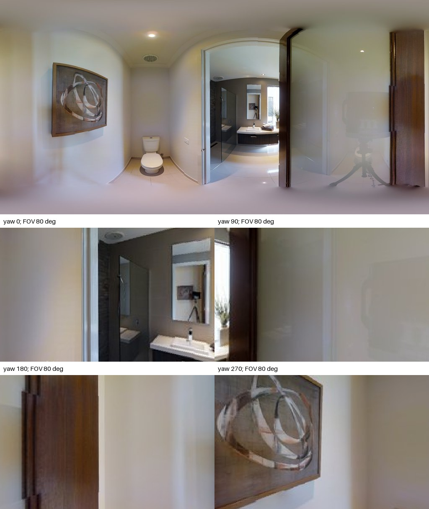
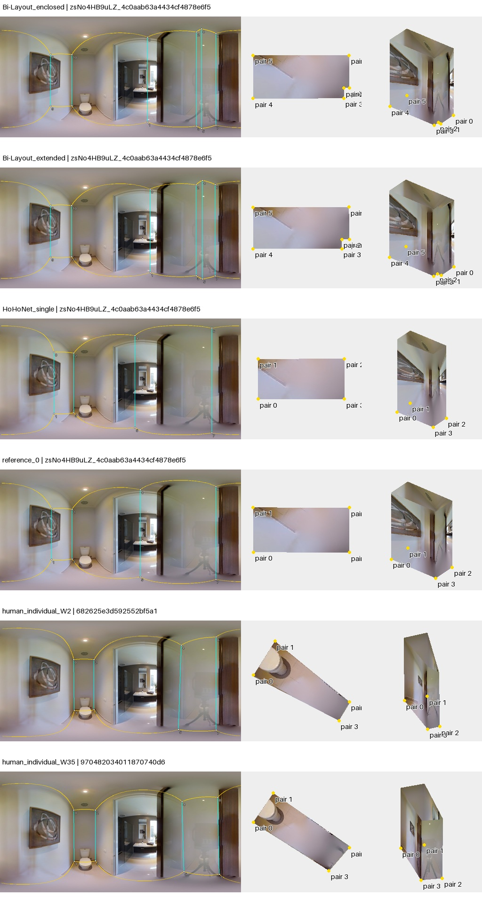

点序复查：旧失败图红线为脚本直连诊断，不是作者墙边证据。导出列表不等于已核实的邻接；重排仅是假设。50图核查与勘误
zsNo4HB9uLZ_4c0aab63a4434cf4878e6f5b3ce9a70b
AI建议；人工最终判断为空。先看原图，再展开布局。图中3D采用单位相机高度、单全景回投影；不是扫描真值。
原始PNG · 2048×1024；点击图片查看原尺寸。下面的旧拼图仅作概览。

马桶隔间通过开门连接洗手区，玻璃门带相机反射；近墙清楚，透过门看到的灰色区域是邻接浴室，不是隔间实墙。
左窗原始几何，右窗为工具的约束拟合诊断；拟合结果不等于正确标注。无法读取的点组保留失败。高清显示升级未重新裁定旧观察。

双头近同且保留门口小凹进，HoHo/参考为矩形；两个人类原始预览明显斜长，上下端点偏离竖直。此处需隔离点位/竖直对齐问题与范围问题。
待人工判断：玻璃门反射是否干扰角点；人类四边形未满足Manhattan的部分不能只靠重排序修复。